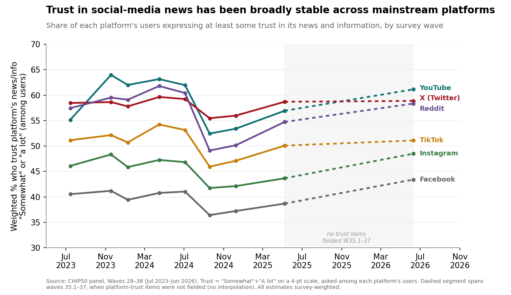
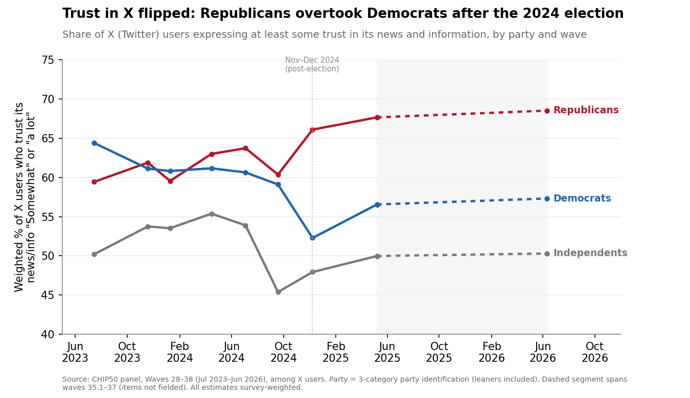
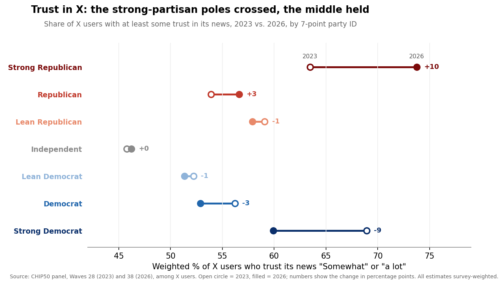
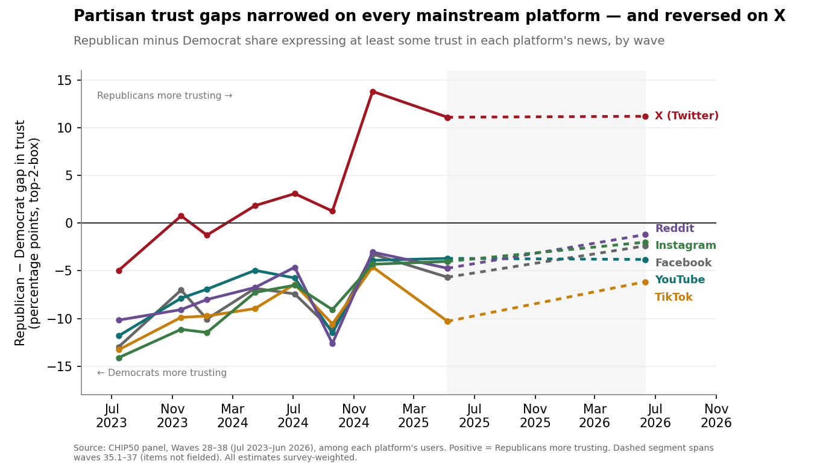
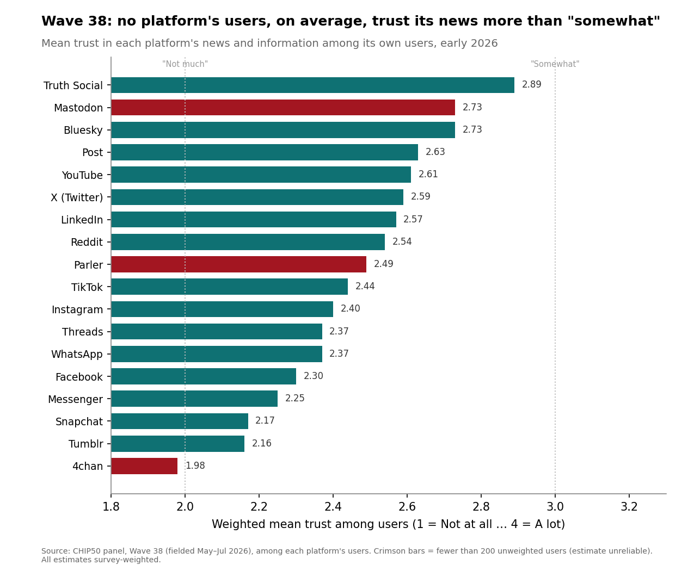
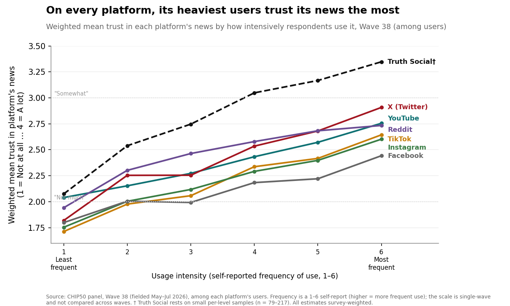

Trust in Social Media Has Barely Moved — but Its Politics Flipped
Across nine survey waves from mid-2023 to 2026, Americans' trust in the news they see on social media stayed low and remarkably flat. The change was partisan: Republican trust rose across nearly every platform, the Democratic edge narrowed, and on X it reversed outright.
Source:CHIP50 (Civic Health and Institutions Project / COVID States Project), Waves 28–38. Item: “How much do you trust news or information you see on [platform]?” — a four-point scale (1 = Not at all, 2 = Not much, 3 = Somewhat, 4 = A lot), asked of each platform's users. Latest wave (38) fielded May 14–July 5, 2026 (wave unweighted n = 31,836; per-platform user bases range from ~170 to ~25,500). All figures are weighted estimates.
Key Takeaways
- Trust is low and has barely moved. On every mainstream platform, users' average trust in the news they see sits between “Not much” (2) and “Somewhat” (3); in the latest wave YouTube is highest at a mean of 2.61 and Facebook among the lowest at 2.30. No platform's users, on average, trust its news more than “somewhat.”
- The mainstream picture is stable, not collapsing. From 2023 to 2026, “at least some trust” changed by fewer than 5 points on most major platforms — YouTube +6.0, Facebook +2.9, X +0.4, Reddit +0.9, TikTok −0.1 points — so the story of the period is continuity, not a trust collapse.
- Trust in X flipped from Democratic to Republican. In mid-2023, Democrats were 5 points more likely than Republicans to trust X's news (64% vs. 59%); by 2026 Republicans led by 11 points (69% vs. 57%) — a 16-point swing that opened sharply around the November–December 2024 wave.
- Republican trust rose across the board. On every mainstream platform, the Republican-minus-Democrat gap moved in the Republican direction — narrowing the long-standing Democratic edge on Facebook (−13 to −2 points), Instagram (−14 to −2), YouTube (−12 to −4), Reddit (−10 to −1), and TikTok (−13 to −6).
- The alternative platforms lost ground. Trust fell most on smaller right-leaning or niche sites — Parler (−16 points), Post (−11), Truth Social (−9), and Tumblr (−8) — even as Truth Social's Republican users remained highly trusting (83%).
- The trust-prone look similar everywhere. In 2026, trust in social-media news runs higher among younger adults, the most educated, Black and Hispanic respondents, and urban residents — a consistent profile across platforms that survives controls.
- A platform's heaviest users trust it most. On every platform, trust rises with intensity of use — Facebook trust climbs from a mean of 1.80 among its least-frequent users to 2.44 among its heaviest, and X's from 1.82 to 2.91 — a positive, significant relationship that survives demographic and party controls.
Introduction
Social-media platforms are where a large share of Americans now encounter news, and how much the public believes what it sees there has become a central question for the information environment. National benchmarks find that trust in social-media information is low but no longer falling uniformly by party: Pew Research Center reported in October 2025 that Republicans and Democrats were, for the first time, equally likely to express at least some trust in information from social-media sites (37% in each group), after a period in which Republican trust rose and then dipped while Democratic trust held steady.1 Pew also found that adults under 30 now trust information from social media (50%) about as much as they trust information from national news organizations (51%).1
The window covered here brackets two events that reshaped the platform landscape. Elon Musk completed his acquisition of Twitter on October 27, 2022, and rebranded the service as X in July 2023 — the same month the CHIP50 trust series begins, so these data track the platform's trajectory entirely in its post-acquisition, Musk-owned period.2 Truth Social, the platform associated with Donald Trump, had launched in February 2022 and enters this period as a small but intensely loyal enclave.3
CHIP50's design adds what single-shot polls cannot: the same trust question, asked platform by platform across nine waves and hundreds of thousands of respondents, allowing both the overall trajectory and the partisan structure of trust to be tracked over time. This report describes how much users trust each platform, how that has changed since 2023, and — the central finding — how the partisan map of trust was redrawn even as overall levels stood still.
A Landscape of Low, Stable Trust
The dominant fact about trust in social-media news is how little it has changed. Across the mainstream platforms, users' average trust has moved within a narrow band between “Not much” and “Somewhat” for three years, with no platform trending sharply up or down. Trust dipped modestly across most platforms in the fall-2024 waves (33–34), around the presidential election, before recovering to roughly its earlier level.

In the latest wave, the ordering is familiar: YouTube (mean 2.61), X (2.59), LinkedIn (2.57), and Reddit (2.54) sit at the top of the mainstream list, while Facebook (2.30), Messenger (2.25), and Snapchat (2.17) anchor the bottom. Even the highest-trusted mass platform lands short of “Somewhat,” and the spread across platforms is a matter of degree within a generally skeptical public. Because these scores come from each platform's own users, the low numbers are notable: even people who choose to spend time on a platform do not particularly believe the news they see there.
The Partisan Realignment on X
The stability of the topline conceals the period's real story: a partisan realignment in who trusts what. Nowhere is it sharper than on X. When the series began in mid-2023, Democrats were slightly more likely than Republicans to trust the news they saw on the platform — 64% of Democratic users expressed at least some trust versus 59% of Republican users, a 5-point Democratic edge. By 2026 the relationship had inverted: 69% of Republican users trusted X's news versus 57% of Democratic users, an 11-point Republican advantage. The net swing of 16 points is the largest partisan movement anywhere in these data.

The crossover was not gradual. Through most of 2024 the two parties tracked closely together; the gap then jumped in the November–December 2024 wave (Wave 34), immediately after the presidential election, and held its new Republican tilt into 2026. The two sides moved in opposite ways to produce it. Republican trust intensified — the share of Republican users saying they trust X's news “a lot” rose from 13% to 24% — while Democratic users soured, with the share saying they trust it “not at all” climbing from 11% to 18%. The realignment was thus driven both by Republicans becoming more confident and by Democrats defecting, not by one mechanism alone.
Reading the same reversal on the full seven-point party scale sharpens it. Trust in X is U-shaped in partisanship — the strongest partisans of both parties trust it most, and the disengaged middle least. In 2023, Strong Democrats (69%) and Strong Republicans (63%) were the two most trusting groups, both well above Independents (46%); by 2026 the two poles had crossed, with Strong Republican trust up 10 points (to 74%) and Strong Democratic trust down 9 (to 60%), while every group in between moved 3 points or less.

Narrowing Gaps Across the Mainstream
X is the most dramatic case, but the same directional force — rising Republican trust relative to Democratic trust — appears on every mainstream platform. Historically, Democrats trusted the news on these platforms more than Republicans did, sometimes by wide margins. Over the period, those Democratic advantages shrank on all of them.

The pattern is consistent enough to read as a single movement. On Instagram the gap narrowed from 14 points favoring Democrats to just 2; on Facebook from 13 to 2; on Reddit from 10 to 1; on YouTube from 12 to 4; on TikTok from 13 to 6. In each case the convergence came mainly from Republican trust rising rather than Democratic trust collapsing, leaving the two parties much closer together in 2026 than in 2023. This mirrors the national benchmark: Pew likewise finds Republican and Democratic trust in social-media information converging to parity by late 2025.
The Alternative Platforms Lose Ground
While mainstream trust held steady, the smaller alternative platforms — several of them associated with the political right — lost ground. Trust fell most on Parler (−16 points in “at least some trust” among its users), Post (−11), Truth Social (−9), Tumblr (−8), Mastodon (−6), and Threads (−5). These are the only platforms with declines large enough to clear the notability threshold, and most are niche sites with small, and in several cases very small, user bases.
Truth Social is the instructive case. It remains the single highest-trusted platform among its users — a mean of 2.89 in 2026, the only platform whose users lean toward genuine trust — and its Republican users are strikingly loyal, with 83% expressing at least some trust, essentially unchanged since 2023. Yet its overall figure slipped from 82% to 73% as its non-Republican users grew more skeptical, and its partisan trust gap widened accordingly. Truth Social is best understood not as a platform Americans broadly trust but as a high-trust Republican enclave that has become, if anything, more partisan over time. Its estimates rest on a modest sample (919 users in Wave 38) and its non-Republican subgroups are thin, so the internal splits should be read as indicative rather than precise. The smallest sites — Parler, Mastodon, and 4chan, each with fewer than 200 users per wave — are reported in the appendix but not interpreted here.
Who Trusts Social Media in 2026
Who is most willing to believe the news on social media? The demographic profile is consistent across platforms and matches the national pattern. Trust is higher among younger adults (on Facebook, mean trust runs from about 2.42 among those 31–50 down to 2.10 among those 71–80), the most educated (graduate-degree holders are the most trusting group on Facebook, X, and YouTube alike), Black and Hispanic respondents (who trust every platform's news more than White respondents do), and urban residents (who trust more than suburban and rural residents). Men are modestly more trusting than women. Independents, the unaffiliated middle, are consistently the least trusting group of all.

Most of these patterns survive statistical controls. In a Wave 38 regression predicting Facebook trust from party and the full demographic set, the higher trust among Black respondents (+0.25 on the 1–4 scale), Hispanic respondents (+0.13), graduate-degree holders (+0.17), and urban residents (+0.07) all remain and are statistically significant, as does the age gradient; the model for X shows the same education, race, and urbanicity effects. Party enters these models in a more complicated way than the raw crosstabs suggest. On Facebook, strong partisans of both parties trust the platform's news about equally once demographics are held constant, with the least trust in the political middle. On X, the Republican advantage is an independent one: net of age, education, race, income, urbanicity, and party detail, Strong Democrats trust X significantly less than Strong Republicans (−0.29 on the 1–4 scale), and the disengaged middle trusts it least of all. The partisan reversal on X is thus not merely a byproduct of who uses the platform — it reflects a genuine partisan gap that survives controls, layered on top of the compositional tilt of X's audience.
Trust and Intensity of Use
Trust in a platform is not evenly distributed among its users: it rises steadily with how heavily a person uses the platform. Within the latest wave, each platform's most frequent users are also its most trusting. On Facebook, average trust climbs from 1.80 among the least-frequent users to 2.44 among those who use it most; on X the gradient is steeper (1.82 to 2.91), and on Truth Social steeper still (2.08 to 3.35, though on small per-level samples). The pattern is present on all seven platforms examined.

This is not merely a matter of who uses each platform. A survey-weighted regression of trust on usage frequency yields a positive and statistically significant slope on every platform — roughly +0.13 to +0.25 points of trust per one-step increase in frequency (all p < .001) — and adding the full set of demographic and party controls barely moves it (the frequency slope goes from +0.13 to +0.13 on Facebook, +0.20 to +0.17 on X, and +0.16 to +0.14 on YouTube, and stays significant in each case). Heavier users trust the news they see more even after accounting for age, education, race, income, urbanicity, and party.
The data cannot settle the direction of the relationship: people may grow more trusting of a platform because they use it heavily — through familiarity, or a feed that increasingly mirrors their own views — or they may use it heavily because they already trust it. What is clear is that the public's skepticism of social-media news is concentrated among its lighter users, while each platform's core audience is considerably more trusting. Because trust is measured among users, and users tilt toward the heavy, engaged end, the platform-level trust levels reported here are, if anything, generous relative to the broader public.
Comparative Context
CHIP50's findings align closely with external benchmarks in direction, with differences in level that trace to question design. Pew Research Center's October 2025 analysis found that trust in information from social-media sites had converged to partisan parity — 37% of Republicans and 37% of Democrats expressing at least some trust — after Republican trust rose and then dipped while Democratic trust stayed flat.1 That is the same convergence CHIP50 documents platform by platform. The absolute levels differ because the two instruments measure different things: Pew asks about trust in social media in general among all adults, whereas CHIP50 asks about specific platforms among their users, which yields higher shares. On the age pattern, Pew's finding that under-30s trust social media about as much as national news echoes CHIP50's consistent youth tilt. The two sources tell a compatible story: low overall trust, a strong generational divide, and a partisan structure that has shifted toward Republicans since 2023.
Conclusion
Between 2023 and 2026, Americans did not come to trust social-media news more or less; on the mainstream platforms the needle barely moved. What changed was the politics of trust. Republicans, once the more skeptical party on nearly every major platform, became more trusting across the board — dramatically so on X, where a Democratic edge became an 11-point Republican advantage, and steadily elsewhere, narrowing Democratic leads on Facebook, Instagram, YouTube, Reddit, and TikTok. At the same time the smaller alternative platforms lost ground, and Truth Social hardened into a high-trust Republican enclave. The result is a landscape that is stable in the aggregate but realigned underneath: a public still broadly skeptical of the news it sees online, but skeptical along new partisan lines. Whether X's new Republican-leaning trust profile persists, and whether the mainstream convergence continues toward parity, are questions the next waves of the panel are positioned to answer.
Methods
Data. CHIP50 (Civic Health and Institutions Project / COVID States Project), platform-trust battery, Waves 28–38. The battery was fielded in Waves 28, 29, 30, 31, 32, 33, 34, 35, and 38 and was not fielded in Waves 35.1, 36, or 37; trend figures show an explicit break across that gap and do not interpolate. Wave field dates run from July 2023 (Wave 28) through the latest wave, Wave 38, fielded May 14–July 5, 2026 (wave unweighted n = 31,836). All percentages and means are weighted estimates, weighted to U.S. adults on race/ethnicity, age, gender, education, 2020 vote, and urban/rural residence; unweighted counts are reliability indicators only.
Measure. “How much do you trust news or information you see on [platform]?” on a four-point scale (1 = Not at all, 2 = Not much, 3 = Somewhat, 4 = A lot); −99 (skipped/refused) is excluded. The item is asked of each platform's users, so all estimates are conditional on using the platform and describe its audience rather than all adults. Two summaries are used: the weighted mean (1–4) and “at least some trust” (the combined “Somewhat” + “A lot” share).
Analysis. The report is primarily descriptive: weighted trust by platform and wave, and by party (three-category identification, leaners included) within platform and wave. Change over time is assessed against a 5-percentage-point notability threshold appropriate to two-point comparisons without a formal significance test; the approximate margin of error for a party subgroup on a large platform (n in the thousands) is on the order of ±1–2 points. Cells with fewer than 10 users are suppressed; platforms with fewer than 200 unweighted users in a wave are flagged and not interpreted. Wave 38 survey-weighted OLS regressions predicting platform trust from seven-category party identification, race/ethnicity, education, gender, income, urbanicity, and age test whether descriptive demographic patterns hold under controls (party reference category Strong Republican; standard errors model-based, not design-based). The trust-and-intensity analysis relates each platform's trust item to its usage-frequency item (a 1–6 ordinal asked among users); because the frequency scale was revised at Wave 38, that analysis is confined to Wave 38 and not compared across waves.
Appendix — Data Tables
Table 1. Trust in each platform's news, Wave 38: weighted mean, share with at least some trust, users (unweighted n), and net change since first measured (percentage points). Among users.
| Platform | Mean (1–4) | At least some trust | Users (unwtd n) | Δ since W28 |
|---|---|---|---|---|
| YouTube | 2.61 | 61.1% | 24,006 | +6.0 |
| X (Twitter) | 2.59 | 58.9% | 8,656 | +0.4 |
| 2.57 | 59.2% | 7,115 | +0.9 | |
| 2.54 | 58.3% | 8,173 | +0.9 | |
| TikTok | 2.44 | 51.1% | 15,664 | −0.1 |
| 2.40 | 48.5% | 18,118 | +2.4 | |
| 2.37 | 48.9% | 6,759 | +0.7 | |
| 2.30 | 43.4% | 25,514 | +2.9 | |
| Messenger | 2.25 | 42.0% | 19,673 | +3.5 |
| Snapchat | 2.17 | 38.4% | 9,517 | +1.5 |
Table A1. Trust over time — “at least some trust” (weighted %, among users), by wave. † = under ~250 users in most waves; unreliable. Bluesky and Threads first fielded Wave 29.
| Platform | W28 | W29 | W30 | W31 | W32 | W33 | W34 | W35 | W38 |
|---|---|---|---|---|---|---|---|---|---|
| YouTube | 55.1 | 64.0 | 62.0 | 63.1 | 62.0 | 52.4 | 53.4 | 56.9 | 61.1 |
| X (Twitter) | 58.5 | 58.6 | 57.8 | 59.6 | 59.2 | 55.5 | 56.0 | 58.7 | 58.9 |
| 58.3 | 67.7 | 67.8 | 67.6 | 64.4 | 50.1 | 51.5 | 54.7 | 59.2 | |
| 57.4 | 59.5 | 59.1 | 61.8 | 60.4 | 49.1 | 50.1 | 54.7 | 58.3 | |
| TikTok | 51.1 | 52.1 | 50.7 | 54.2 | 53.1 | 46.0 | 47.1 | 50.1 | 51.1 |
| 46.1 | 48.3 | 45.9 | 47.3 | 46.8 | 41.8 | 42.1 | 43.7 | 48.5 | |
| 48.2 | 51.0 | 48.0 | 50.5 | 49.9 | 43.0 | 42.8 | 47.5 | 48.9 | |
| 40.5 | 41.2 | 39.4 | 40.8 | 41.0 | 36.4 | 37.2 | 38.7 | 43.4 | |
| Messenger | 38.5 | 41.6 | 39.0 | 42.0 | 41.7 | 34.9 | 35.0 | 37.7 | 42.0 |
| Snapchat | 36.9 | 38.5 | 37.4 | 40.0 | 40.3 | 35.8 | 34.2 | 35.9 | 38.4 |
| Truth Social | 82.1 | 81.8 | 75.5 | 76.2 | 81.3 | 79.7 | 78.3 | 78.7 | 73.3 |
| Bluesky | — | 65.4 | 56.4 | 63.0 | 67.6 | 69.9 | 67.7 | 71.5 | 67.5 |
| Threads | — | 53.3 | 50.6 | 51.3 | 54.4 | 50.1 | 46.4 | 47.8 | 48.7 |
| Post | 68.5 | 67.0 | 65.8 | 64.4 | 60.6 | 64.2 | 62.4 | 63.8 | 57.1 |
| Tumblr | 45.5 | 43.0 | 39.6 | 44.0 | 48.3 | 44.2 | 41.3 | 45.7 | 38.0 |
| Parler† | 70.3 | 60.1 | 53.1 | 63.9 | 70.3 | 67.4 | 58.7 | 57.5 | 54.1 |
| Mastodon† | 71.2 | 69.8 | 48.1 | 61.7 | 62.1 | 67.9 | 62.4 | 60.9 | 65.8 |
| 4chan† | 31.6 | 35.5 | 34.2 | 36.2 | 34.1 | 39.6 | 43.0 | 39.8 | 33.3 |
Table A2a. Wave 38 trust distribution, selected platforms (weighted % of users at each response). Rows may not sum to 100 due to rounding.
| Platform | Not at all | Not much | Somewhat | A lot | Users (n) |
|---|---|---|---|---|---|
| YouTube | 14.7 | 24.1 | 46.6 | 14.6 | 24,006 |
| X (Twitter) | 17.2 | 24.0 | 41.4 | 17.5 | 8,656 |
| Truth Social | 13.7 | 13.1 | 43.8 | 29.5 | 919 |
| 21.2 | 35.4 | 35.5 | 7.9 | 25,514 |
Table A2b. Trust in X's news over time, by party (weighted % with at least some trust). Among X users. Positive Rep − Dem = Republicans more trusting.
| Wave (approx. date) | Republican | Democrat | Independent | Rep − Dem |
|---|---|---|---|---|
| 28 (Jul 2023) | 59.4 | 64.4 | 50.2 | −5.0 |
| 30 (Jan 2024) | 59.5 | 60.8 | 53.5 | −1.3 |
| 32 (Jul 2024) | 63.7 | 60.6 | 53.9 | +3.1 |
| 33 (Sep 2024) | 60.4 | 59.1 | 45.4 | +1.3 |
| 34 (Dec 2024) | 66.1 | 52.3 | 47.9 | +13.8 |
| 35 (May 2025) | 67.7 | 56.5 | 50.0 | +11.1 |
| 38 (2026) | 68.5 | 57.3 | 50.3 | +11.2 |
Table A2c. Republican-minus-Democrat trust gap, first wave vs. latest (percentage points, “at least some trust,” among users). Negative = Democrats more trusting.
| Platform | Wave 28 gap | Wave 38 gap | Change in gap |
|---|---|---|---|
| X (Twitter) | −5.0 | +11.2 | +16.2 |
| −14.1 | −2.0 | +12.1 | |
| −13.0 | −2.4 | +10.6 | |
| −10.2 | −1.2 | +9.0 | |
| YouTube | −11.8 | −3.8 | +8.0 |
| TikTok | −13.3 | −6.1 | +7.2 |
Table A3. Wave 38 OLS regressions — trust (1–4) on party and demographics: full coefficients.
How to read this table. Each categorical predictor enters as a set of 0/1 dummy variables — one per category except a reference category, which is omitted and folded into the intercept. Each coefficient is the difference in mean trust (1–4) between that category and its reference, holding the other predictors constant (so age contributes seven coefficients, each vs. 18–20). References: party = Strong Republican; race = White; education = College Degree; gender = Female; income = bracket 1 (lowest); community = Suburban; age = 18–20. (The 7-point party scale is coded 1 = Strong Republican … 7 = Strong Democrat, verified against the response data.) The intercept is predicted trust for a respondent in every reference category. Survey-weighted (WLS); model-based SEs. *** p<.001, ** p<.01, * p<.05, n.s. = not significant.
| Predictor (dummy) | X (Twitter) | Truth Social | |
|---|---|---|---|
| Intercept (reference person) | +2.292 *** | +2.689 *** | +2.416 *** |
| party7: Republican | −0.177 *** | −0.291 *** | −0.263 * |
| party7: Lean Republican | −0.236 *** | −0.192 *** | −0.135 n.s. |
| party7: Independent | −0.334 *** | −0.537 *** | −0.975 *** |
| party7: Lean Democrat | −0.243 *** | −0.436 *** | −1.463 *** |
| party7: Democrat | −0.198 *** | −0.442 *** | −0.586 *** |
| party7: Strong Democrat | −0.024 n.s. | −0.294 *** | −0.561 *** |
| Race: African American | +0.247 *** | +0.174 *** | −0.002 n.s. |
| Race: Asian American | +0.029 n.s. | +0.013 n.s. | +0.190 n.s. |
| Race: Hispanic | +0.132 *** | +0.116 *** | +0.076 n.s. |
| Race: Other | +0.025 n.s. | −0.076 n.s. | −0.225 n.s. |
| Education: Some High School or Less | +0.019 n.s. | −0.281 *** | +0.478 * |
| Education: High School Graduate | +0.041 * | −0.050 n.s. | −0.133 n.s. |
| Education: Some College | −0.050 ** | −0.135 *** | −0.062 n.s. |
| Education: Graduate Degree | +0.172 *** | +0.205 *** | +0.306 ** |
| Gender: Male | +0.035 ** | +0.051 * | −0.159 * |
| Income: bracket 2 | −0.058 * | +0.111 n.s. | +0.028 n.s. |
| Income: bracket 3 | −0.003 n.s. | +0.076 n.s. | +0.215 n.s. |
| Income: bracket 4 | −0.046 n.s. | +0.040 n.s. | +0.327 n.s. |
| Income: bracket 5 | −0.070 ** | −0.030 n.s. | +0.143 n.s. |
| Income: bracket 6 | −0.070 ** | −0.023 n.s. | +0.402 * |
| Income: bracket 7 | −0.080 ** | +0.074 n.s. | +0.322 n.s. |
| Income: bracket 8 | +0.007 n.s. | +0.128 * | +0.169 n.s. |
| Income: bracket 9 | +0.048 n.s. | +0.122 * | +0.328 n.s. |
| Income: bracket 10 | −0.044 n.s. | +0.043 n.s. | +0.463 n.s. |
| Income: bracket 11 | +0.003 n.s. | +0.134 n.s. | +0.293 n.s. |
| Community: Urban | +0.074 *** | +0.088 *** | −0.022 n.s. |
| Community: Rural | −0.056 *** | −0.128 *** | −0.021 n.s. |
| Age: 21 to 30 | +0.146 *** | +0.121 ** | +0.511 * |
| Age: 31 to 40 | +0.193 *** | +0.184 *** | +0.731 ** |
| Age: 41 to 50 | +0.206 *** | +0.088 n.s. | +0.560 * |
| Age: 51 to 60 | +0.078 * | −0.075 n.s. | +0.506 * |
| Age: 61 to 70 | −0.012 n.s. | −0.079 n.s. | +0.442 * |
| Age: 71 to 80 | −0.109 ** | −0.137 * | +0.456 * |
| Age: 80 and over | −0.106 n.s. | −0.105 n.s. | +0.337 n.s. |
| R² / n (users) | 0.063 / 25,454 | 0.103 / 8,642 | 0.229 / 917 |
Income brackets run 1 (lowest) to 11 (highest); dollar cutpoints not shown. The party ladder is U-shaped for Facebook (least trust among Independents; Strong Republicans ≈ Strong Democrats) and uniformly negative for X and Truth Social (every group trusts them less than Strong Republicans). The age pattern is an inverted U on Facebook and X and uniformly elevated on Truth Social. Truth Social rests on a small sample (n = 917) and several thin cells; read cautiously.
Table A4. Wave 38 mean trust in each platform's news, by usage-frequency level (weighted mean, 1–4, among users). Frequency is a 1–6 self-report; single-wave. OLS slope is the survey-weighted coefficient of trust on frequency (continuous); *** p<.001. † small per-level cells (n = 79–217).
| Platform | Freq 1 | 2 | 3 | 4 | 5 | Freq 6 | Slope/step |
|---|---|---|---|---|---|---|---|
| YouTube | 2.04 | 2.15 | 2.27 | 2.43 | 2.57 | 2.76 | +0.16*** |
| X (Twitter) | 1.82 | 2.25 | 2.26 | 2.54 | 2.68 | 2.91 | +0.20*** |
| 1.94 | 2.30 | 2.46 | 2.58 | 2.68 | 2.73 | +0.13*** | |
| TikTok | 1.71 | 1.98 | 2.06 | 2.34 | 2.42 | 2.64 | +0.18*** |
| 1.75 | 2.00 | 2.12 | 2.29 | 2.40 | 2.60 | +0.16*** | |
| 1.80 | 2.01 | 1.99 | 2.18 | 2.22 | 2.44 | +0.13*** | |
| Truth Social† | 2.08 | 2.54 | 2.75 | 3.05 | 3.17 | 3.35 | +0.25*** |
Notes and sources
- Pew Research Center, “How Americans' trust in information from news organizations and social media sites has changed over time,” October 29, 2025. Republicans and Democrats equally likely to express at least some trust in information from social-media sites (37% each); Republican trust down 8 points after a period of increase while Democratic trust held steady; adults under 30 about as likely to trust information from social media (50%) as from national news organizations (51%). https://www.pewresearch.org/short-reads/2025/10/29/how-americans-trust-in-information-from-news-organizations-and-social-media-sites-has-changed-over-time/
- Elon Musk completed his acquisition of Twitter on October 27, 2022, and the service was rebranded as X in July 2023. “Acquisition of Twitter by Elon Musk,” Wikipedia. https://en.wikipedia.org/wiki/Acquisition_of_Twitter_by_Elon_Musk
- Truth Social, the platform associated with Donald Trump, launched in February 2022. “Trump's social media app Truth Social launches,” NPR, February 22, 2022. https://www.npr.org/2022/02/22/1082243094/trumps-social-media-app-launches-year-after-twitter-ban
CHIP50 Waves 28–38 (Civic Health and Institutions Project / COVID States Project); latest wave (38) fielded May 14–July 5, 2026. All figures are weighted estimates.